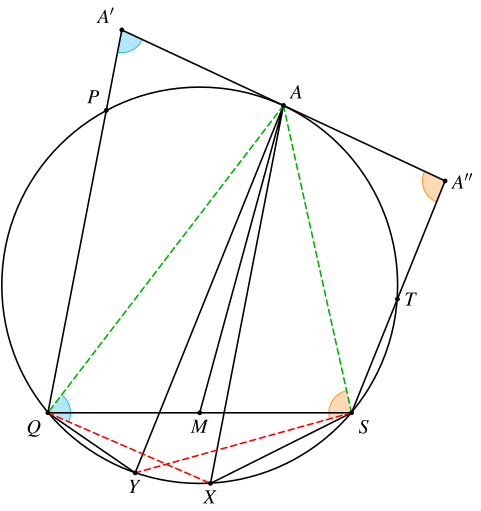
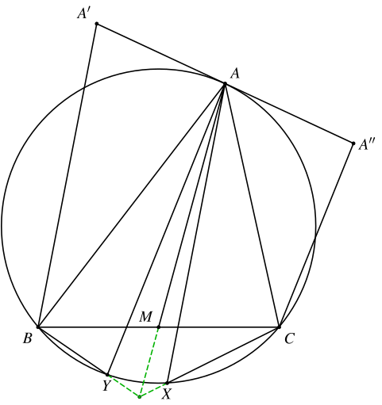
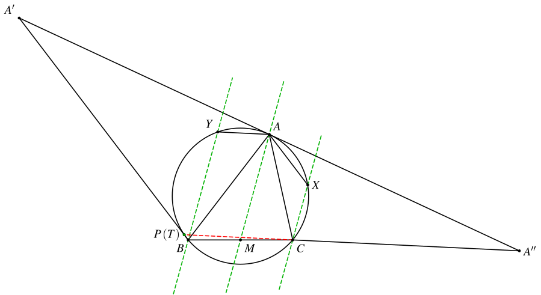

1. 题目
如图，过圆 ω 上一点 A 作切线 l，在 l 上取关于 A 对称的两点 A′、A′′。过 A′ 作 ω 的一条割线与 ω 交于 P、Q，过 A′′ 作 ω 的一条割线与 ω 交于 S、T。过 A 作 PQ、ST 的平行线，分别与 ω 再次交于点 X、Y。设 M 是 QS 的中点，求证：AM、QY、SX 三线共点。
2. 分析
这个题要证明的是三线共点，如果能够想到使用角元塞瓦定理来证明，剩下的倒角就是trivial的了。
另外，注意到这个题目中 P、T 两点其实没什么作用（并不是），我们可以把原图看成是以 △AQS 的外接圆为基础进行的构造，而且其中只有一个长度条件（还是中点），因此可以考虑使用重心坐标来进行计算。
3. 解法一：角元塞瓦定理
只需证
sin∠MQAsin∠SAM⋅sin∠YQSsin∠AQY⋅sin∠XSAsin∠QSX=1
即可。

由 M 是 QS 的中点可知
sin∠MQAsin∠SAM=ASAQ
注意到 ∠A′AQ=∠AXQ，AX∥A′Q⟹∠A′QA=∠QAX，因此 △A′QA∼QAX，∠A′=∠AQX。
同理可证，△A′′SA∼△SAY，∠A′′=∠ASY。
因此
sin∠YQSsin∠AQY=sin∠YASsin∠ASY=sin∠ASA′′sin∠A′′=AA′′AS
且
sin∠XSAsin∠QSX=sin∠XQAsin∠QAX=sin∠A′sin∠AQA′=AQAA′
结合 AA′=AA′′ 可知结论成立。
4. 解法二：重心坐标
为了方便叙述，我们将题目改成下面的形式：
如图，ω 是 △ABC 的外接圆，过点 A 作 ω 的切线 l，在 l 上取关于 A 对称的两点 A′、A′′。过 A 作 A′B、A′′C 的平行线，分别与 ω 再次交于点 X、Y。设 M 是 BC 的中点，求证：AM、BY、CX 三线共点。

以 △ABC 为参考三角形建立重心坐标系，则 A=(1,0,0)，B=(0,1,0)，C=(0,0,1)，M=(0:1:1)，ω 的方程为
a2yz+b2zx+c2xy=0
切线 l 的方程为
c2y+b2z=0
切线方程的推导
设过点 A 的切线与直线 BC 交于点 K，则 △KAC∼△KBA，于是
KAKB=KCKA=ACAB=bc⟹KCKB=KAKB⋅KCKA=b2c2
因此点 K 的坐标为 (0:−b2:c2)，直线 AK 的方程为
c2y+b2z=0
设切线上的两点 A′=(m:b2:−c2)，A′′=(n:b2:−c2)，则由 A 是 A′A′′ 的中点可知
(m+b2−c2m+n+b2−c2n:m+b2−c2b2+n+b2−c2b2:m+b2−c2−c2+n+b2−c2−c2)=(1:0:0)
故
m+b2−c21+n+b2−c21=0
不妨设 m+b2−c2=t，n+b2−c2=−t，显然 t=0。
直线 A′B 的方程为 c2x+mz=0，设直线 AX 的方程为 y−kz=0（k=0），则由 A′B∥AX 可知
c201011m−k1=0⟹k=c2m−c2=c2t−b2
联立 AX 与 ω 的方程，可解得 X 的坐标为
X=(−a2k:⋯:b2+c2k)=(−a2k:kt:t)
因此，直线 CX 的方程为 tx+a2y=0。
同理，直线 A′′C 的方程为 b2x−ny=0，设直线 AY 的方程为 y−lz=0（l=0），则由 A′′C∥AY 可知
b201−n110−l1=0⟹l=−n+b2b2=t−c2b2
联立 AY 与 ω 的方程，可解得 Y 的坐标为
Y=(−a2l:⋯:b2+c2l)=(−a2:⋯:b2⋅l1+c2)=(−a2:lt:t)
因此，直线 BY 的方程为 tx+a2z=0。
又知直线 AM 的方程为 y−z=0，由
tt0a2010a2−1=0
可知直线 BY、CX、AM 平行或交于一点。
注意到 BY 与 CX 的交点坐标为 (a2:−t:−t)，假设 BY∥CX，则有 a2−2t=0。可以验证，此时 A′B、A′′C 的交点 (mn,mb2,−nc2) 位于 ω 上，即原图中 P、T 两点重合，不合题意。

因此，原图中直线 QY、SX、AM 交于一点。